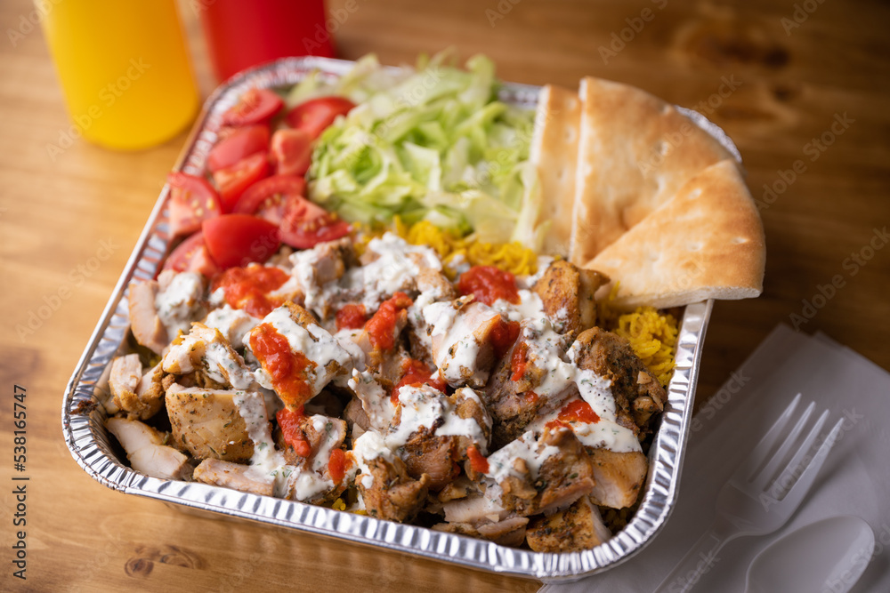
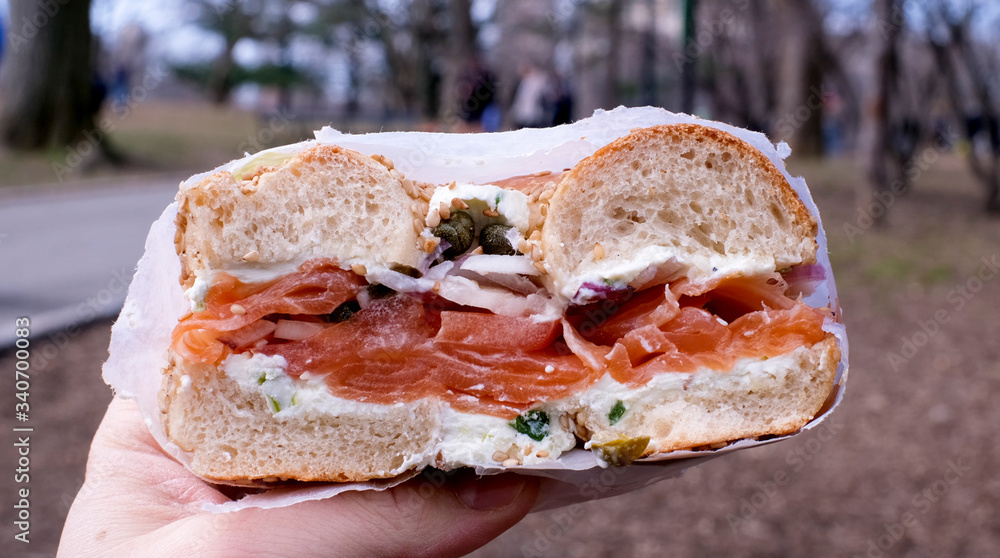
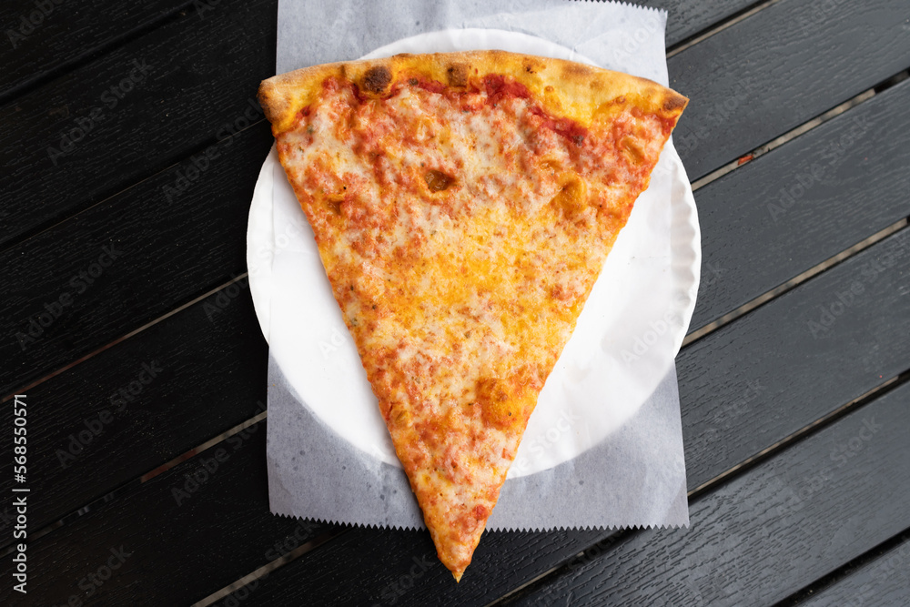
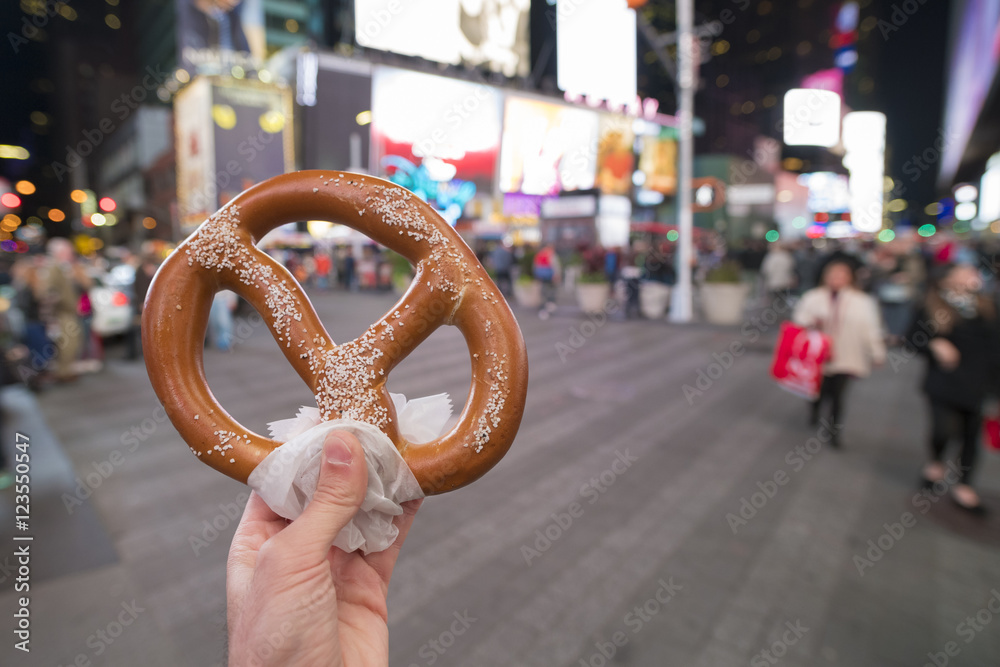

This is a popular halal street food dish made with seasoned chicken, rice, salad, and special white and hot sauces. You’ll find it all over NYC.
New Yorkers love bagels. This version has cream cheese, smoked salmon (lox), capers, and onions. A classic breakfast treat.
Famous for its thin crust and foldable slices. You can find a great slice just about anywhere in the city — often for $1!
Salty, soft pretzels sold by street vendors are a favorite snack, especially near parks and tourist spots like Times Square.
